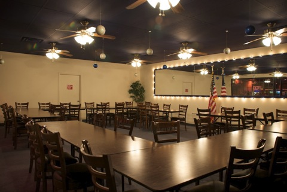

The Blue Ox is your home for the Minnesota Vikings!
Click the headers to read the different sectionsWelcome
The Blue Ox is a “Minnesota Place” providing Midwestern hospitality. Accordingly, we are a “home away from home” to our displaced friends from Minnesota. This is especially true during football season when we feature the Minnesota Vikings.
We serve breakfast, lunch and dinner. In addition, we have a private meeting, or banquet room which is available for parties of up to fifty people.
Also, we feature the best in locals gaming with bar top video poker, keno, blackjack and slots.
The Blue Ox Tavern is open 24 hours, 7 days a week and is located on Sahara approximately 3½ miles west of the “Strip.” More accurately, we are at 5825 W Sahara Ave, just East of Jones in the Burlington Coat Factory Plaza.
Great Dining!
We place great emphases on our dining and we serve breakfast, lunch and dinner.
Make sure to come by to check out our daily specials as well.
NFL Football Specials
NFL Football Specials
Bucket of
Miller High Life
or
Pabst Blue Ribbon
Five for $10
Breakfast Burrito
7.99
Chili Cheese Fries
4.99
Dining room only.
Graveyard Specials
Graveyard Specials
$4
PIZZA
$2
BEER | WELL | WINE
$10
CARD OF THE DAY
FIVES THRU KINGS
(See bartender for details)
The Best in Locals Gaming
BAR TOP VIDEO
Poker | Keno | Blackjack | Slots
QUARTER & DOLLAR PROGRESSIVES
Quarter Progressive Starts at $2,000
Dollar Progressive Starts at $8,000
TRIPLE PLAY | FIVE PLAY
20 Cent Triple Play
10 & 20 Cent Five Play
PROGRESSIVE PAY TABLES
GAMING PROMOTIONS
Card of the Day
Four of a Kind Spins the Wheel
Private Banquet / Meeting Room
Please Call for information
